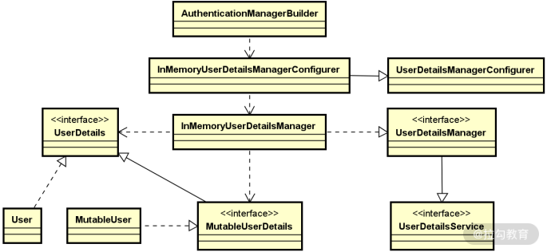

- 00 开篇词 Spring Security，为你的应用安全与职业之路保驾护航.md.html
- 01 顶级框架：Spring Security 是一款什么样的安全性框架？.md.html
- 02 用户认证：如何使用 Spring Security 构建用户认证体系？.md.html
- 03 认证体系：如何深入理解 Spring Security 用户认证机制？.md.html
- 04 密码安全：Spring Security 中包含哪些加解密技术？.md.html
- 05 访问授权：如何对请求的安全访问过程进行有效配置？.md.html
- 06 权限管理：如何剖析 Spring Security 的授权原理？.md.html
- 07 案例实战：使用 Spring Security 基础功能保护 Web 应用.md.html
- 08 管道过滤：如何基于 Spring Security 过滤器扩展安全性？.md.html
- 09 攻击应对：如何实现 CSRF 保护和跨域 CORS？.md.html
- 10 全局方法：如何确保方法级别的安全访问？.md.html
- 11 案例实战：使用 Spring Security 高级主题保护 Web 应用.md.html
- 12 开放协议：OAuth2 协议解决的是什么问题？.md.html
- 13 授权体系：如何构建 OAuth2 授权服务器？.md.html
- 14 资源保护：如何基于 OAuth2 协议配置授权过程？.md.html
- 15 令牌扩展：如何使用 JWT 实现定制化 Token？.md.html
- 16 案例实战：基于 Spring Security 和 Spring Cloud 构建微服务安全架构.md.html
- 17 案例实战：基于 Spring Security 和 OAuth2 实现单点登录.md.html
- 18 技术趋势：如何为 Spring Security 添加响应式编程特性？.md.html
- 19 测试驱动：如何基于 Spring Security 测试系统安全性？.md.html
- 20 结束语 以终为始，Spring Security 的学习总结.md.html
- 捐赠
03 认证体系：如何深入理解 Spring Security 用户认证机制？
上一讲，我们给出了 Spring Security 中实现用户认证的系统方法，可以发现整个实现过程还是比较简单的，开发人员只需要通过一些配置方法就能完成复杂的处理逻辑。这种简单性得益于 Spring Security 对用户认证过程的提炼和抽象。今天我们就围绕这个话题展开讨论，继续探究 Spring Security 中的用户和认证对象，以及如何基于这些对象完成定制化的用户认证方案。
Spring Security 中的用户和认证
Spring Security 中的认证过程由一组核心对象组成，大致可以分成两大类，一类是用户对象，一类是认证对象，下面我们来具体了解一下。
Spring Security 中的用户对象
Spring Security 中的用户对象用来描述用户并完成对用户信息的管理，涉及UserDetails、GrantedAuthority、UserDetailsService 和 UserDetailsManager这四个核心对象。
- UserDetails：描述 Spring Security 中的用户。
- GrantedAuthority：定义用户的操作权限。
- UserDetailsService：定义了对 UserDetails 的查询操作。
- UserDetailsManager：扩展 UserDetailsService，添加了创建用户、修改用户密码等功能。
这四个对象之间的关联关系如下图所示，显然，对于由 UserDetails 对象所描述的一个用户而言，它应该具有 1 个或多个能够执行的 GrantedAuthority：

Spring Security 中的四大核心用户对象
结合上图，我们先来看承载用户详细信息的 UserDetails 接口，如下所示：
public interface UserDetails extends Serializable {
//获取该用户的权限信息
Collection<? extends GrantedAuthority> getAuthorities();
//获取密码
String getPassword();
//获取用户名
String getUsername();
//判断该账户是否已失效
boolean isAccountNonExpired();
//判断该账户是否已被锁定
boolean isAccountNonLocked();
//判断该账户的凭证信息是否已失效
boolean isCredentialsNonExpired();
//判断该用户是否可用
boolean isEnabled();
}
通过 UserDetails，我们可以获取用户相关的基础信息，并判断其当前状态。同时，我们也可以看到 UserDetails 中保存着一组 GrantedAuthority 对象。而 GrantedAuthority 指定了一个方法用来获取权限信息，如下所示：
public interface GrantedAuthority extends Serializable {
//获取权限信息
String getAuthority();
}
UserDetails 存在一个子接口 MutableUserDetails，从命名上不难看出后者是一个可变的 UserDetails，而可变的内容就是密码。MutableUserDetails 接口的定义如下所示：
interface MutableUserDetails extends UserDetails {
//设置密码
void setPassword(String password);
}
如果我们想要在应用程序中创建一个 UserDetails 对象，可以使用如下所示的链式语法：
UserDetails user = User.withUsername("jianxiang")
.password("123456")
.authorities("read", "write")
.accountExpired(false)
.disabled(true)
.build();
Spring Security 还专门提供了一个 UserBuilder 对象来辅助构建 UserDetails，使用方式也类似：
User.UserBuilder builder =
User.withUsername("jianxiang");
UserDetails user = builder
.password("12345")
.authorities("read", "write")
.accountExpired(false)
.disabled(true)
.build();
在 Spring Security 中，针对 UserDetails 专门提供了一个 UserDetailsService，该接口用来管理 UserDetails，定义如下：
public interface UserDetailsService {
//根据用户名获取用户信息
UserDetails loadUserByUsername(String username) throws UsernameNotFoundException;
}
而 UserDetailsManager 继承了 UserDetailsService，并提供了一批针对 UserDetails 的操作接口，如下所示：
public interface UserDetailsManager extends UserDetailsService {
//创建用户
void createUser(UserDetails user);
//更新用户
void updateUser(UserDetails user);
//删除用户
void deleteUser(String username);
//修改密码
void changePassword(String oldPassword, String newPassword);
//判断指定用户名的用户是否存在
boolean userExists(String username);
}
这样，几个核心用户对象之间的关联关系就很清楚了，接下来我们需要进一步明确具体的实现过程。
我们来看 UserDetailsManager 的两个实现类，一个是基于内存存储的 InMemoryUserDetailsManager，一个是基于关系型数据库存储的 JdbcUserDetailsManager。
这里，我们以 JdbcMemoryUserDetailsManager 为例展开分析，它的 createUser 方法如下所示：
public void createUser(final UserDetails user) {
validateUserDetails(user);
getJdbcTemplate().update(createUserSql, ps -> {
ps.setString(1, user.getUsername());
ps.setString(2, user.getPassword());
ps.setBoolean(3, user.isEnabled());
int paramCount = ps.getParameterMetaData().getParameterCount();
if (paramCount > 3) {
ps.setBoolean(4, !user.isAccountNonLocked());
ps.setBoolean(5, !user.isAccountNonExpired());
ps.setBoolean(6, !user.isCredentialsNonExpired());
}
});
if (getEnableAuthorities()) {
insertUserAuthorities(user);
}
}
可以看到，这里直接使用了 Spring 框架中的 JdbcTemplate 模板工具类实现了数据的插入，同时完成了 GrantedAuthority 的存储。
UserDetailsManager 是一条相对独立的代码线，为了完成用户信息的配置，还存在另一条代码支线，即 UserDetailsManagerConfigurer。该类维护了一个 UserDetails 列表，并提供了一组 withUser 方法完成用户信息的初始化，如下所示：
private final List<UserDetails> users = new ArrayList<>();
public final C withUser(UserDetails userDetails) {
this.users.add(userDetails);
return (C) this;
}
而 withUser 方法返回的是一个 UserDetailsBuilder 对象，该对象内部使用了前面介绍的 UserBuilder 对象，因此可以实现类似 .withUser(“spring_user”).password(“password1”).roles(“USER”) 这样的链式语法，完成用户信息的设置。这也是上一讲中，我们在介绍基于内存的用户信息存储方案时使用的方法。
作为总结，我们也梳理了 Spring Security 中与用户对象相关的一大批实现类，它们之间的关系如下图所示：

Spring Security 中用户对象相关类结构图
Spring Security 中的认证对象
有了用户对象，我们就可以讨论具体的认证过程了，首先来看认证对象 Authentication，如下所示：
public interface Authentication extends Principal, Serializable {
//安全主体具有的权限
Collection<? extends GrantedAuthority> getAuthorities();
//证明主体有效性的凭证
Object getCredentials();
//认证请求的明细信息
Object getDetails();
//主体的标识信息
Object getPrincipal();
//认证是否通过
boolean isAuthenticated();
//设置认证结果
void setAuthenticated(boolean isAuthenticated) throws IllegalArgumentException;
}
认证对象代表认证请求本身，并保存该请求访问应用程序过程中涉及的各个实体的详细信息。在安全领域，请求访问该应用程序的用户通常被称为主体（Principal），在 JDK 中存在一个同名的接口，而 Authentication 扩展了这个接口。
显然，Authentication 只代表了认证请求本身，而具体执行认证的过程和逻辑需要由专门的组件来负责，这个组件就是 AuthenticationProvider，定义如下：
public interface AuthenticationProvider {
//执行认证，返回认证结果
Authentication authenticate(Authentication authentication)
throws AuthenticationException;
//判断是否支持当前的认证对象
boolean supports(Class<?> authentication);
}
讲到这里，你可能会认为 Spring Security 是直接使用 AuthenticationProvider 接口完成用户认证的，其实不然。如果你翻阅 Spring Security 的源码，会发现它使用了 AuthenticationManager 接口来代理 AuthenticationProvider 提供的认证功能。这里，我们以 InMemoryUserDetailsManager 中的 changePassword 为例，分析用户认证的执行过程（为了展示简洁，部分代码做了裁剪）：
public void changePassword(String oldPassword, String newPassword) {
Authentication currentUser = SecurityContextHolder.getContext()
.getAuthentication();
if (currentUser == null) {
throw new AccessDeniedException(
"Can't change password as no Authentication object found in context "
+ "for current user.");
}
String username = currentUser.getName();
if (authenticationManager != null) {
authenticationManager.authenticate(new UsernamePasswordAuthenticationToken(
username, oldPassword));
}
else {
…
}
MutableUserDetails user = users.get(username);
if (user == null) {
throw new IllegalStateException("Current user doesn't exist in database.");
}
user.setPassword(newPassword);
}
可以看到，这里使用了 AuthenticationManager 而不是 AuthenticationProvider 中的 authenticate() 方法来执行认证。同时，我们也注意到这里出现了 UsernamePasswordAuthenticationToken 类，这就是 Authentication 接口的一个具体实现类，用来存储用户认证所需的用户名和密码信息。
同样作为总结，我们也梳理了 Spring Security 中与认证对象相关的一大批核心类，它们之间的关系如下所示：

Spring Security 中认证的对象相关类结构图
实现定制化用户认证方案
通过前面的分析，我们明确了用户信息存储的实现过程实际上是可以定制化的。Spring Security 所做的工作只是把常见的、符合一般业务场景的实现方式嵌入到了框架中。如果有特殊的场景，开发人员完全可以实现自定义的用户信息存储方案。
现在，我们已经知道 UserDetails 接口代表着用户详细信息，而负责对 UserDetails 进行各种操作的则是 UserDetailsService 接口。因此，实现定制化用户认证方案主要就是实现 UserDetails 和 UserDetailsService 这两个接口。
扩展 UserDetails
扩展 UserDetails 的方法就是直接实现该接口，例如我们可以构建如下所示的 SpringUser 类：
public class SpringUser implements UserDetails {
private static final long serialVersionUID = 1L;
private Long id;
private final String username;
private final String password;
private final String phoneNumber;
//省略 getter/setter
@Override
public String getUsername() {
return username;
}
@Override
public String getPassword() {
return password;
}
@Override
public Collection<? extends GrantedAuthority> getAuthorities() {
return Arrays.asList(new SimpleGrantedAuthority("ROLE_USER"));
}
@Override
public boolean isAccountNonExpired() {
return true;
}
@Override
public boolean isAccountNonLocked() {
return true;
}
@Override
public boolean isCredentialsNonExpired() {
return true;
}
@Override
public boolean isEnabled() {
return true;
}
}
显然，这里使用了一种最简单的方法来满足 UserDetails 中各个接口的实现需求。一旦我们构建了这样一个 SpringUser 类，就可以创建对应的表结构存储类中定义的字段。同时，我们也可以基于 Spring Data JPA 来创建一个自定义的 Repository，如下所示：
public interface SpringUserRepository extends CrudRepository<SpringUser, Long> {
SpringUser findByUsername(String username);
}
SpringUserRepository 扩展了 Spring Data 中的 CrudRepository 接口，并提供了一个方法名衍生查询 findByUsername。
扩展 UserDetailsService
接着，我们来实现 UserDetailsService 接口，如下所示：
@Service
public class SpringUserDetailsService
implements UserDetailsService {
@Autowired
private SpringUserRepository repository;
@Override
public UserDetails loadUserByUsername(String username)
throws UsernameNotFoundException {
SpringUser user = repository.findByUsername(username);
if (user != null) {
return user;
}
throw new UsernameNotFoundException(
"SpringUser '" + username + "' not found");
}
}
我们知道 UserDetailsService 接口只有一个 loadUserByUsername 方法需要实现。因此，我们基于 SpringUserRepository 的 findByUsername 方法，根据用户名从数据库中查询数据。
扩展 AuthenticationProvider
扩展 AuthenticationProvider 的过程就是提供一个自定义的 AuthenticationProvider 实现类。这里我们以最常见的用户名密码认证为例，梳理自定义认证过程所需要实现的步骤，如下所示：

自定义 AuthenticationProvider 的实现流程图
上图中的流程并不复杂，首先我们需要通过 UserDetailsService 获取一个 UserDetails 对象，然后根据该对象中的密码与认证请求中的密码进行匹配，如果一致则认证成功，反之抛出一个 BadCredentialsException 异常。示例代码如下所示：
@Component
public class SpringAuthenticationProvider implements AuthenticationProvider {
@Autowired
private UserDetailsService userDetailsService;
@Autowired
private PasswordEncoder passwordEncoder;
@Override
public Authentication authenticate(Authentication authentication) {
String username = authentication.getName();
String password = authentication.getCredentials().toString();
UserDetails user = userDetailsService.loadUserByUsername(username);
if (passwordEncoder.matches(password, user.getPassword())) {
return new UsernamePasswordAuthenticationToken(username, password, u.getAuthorities());
} else {
throw new BadCredentialsException("The username or password is wrong!");
}
}
@Override
public boolean supports(Class<?> authenticationType) {
return authenticationType.equals(UsernamePasswordAuthenticationToken.class);
}
}
这里我们同样使用了 UsernamePasswordAuthenticationToken 来传递用户名和密码，并使用一个 PasswordEncoder 对象校验密码。
整合定制化配置
最后，我们创建一个 SpringSecurityConfig 类，该类继承了 WebSecurityConfigurerAdapter 配置类。这次，我们将使用自定义的 SpringUserDetailsService 来完成用户信息的存储和查询，需要对原有配置策略做一些调整。调整之后的完整 SpringSecurityConfig 类如下所示：
@Configuration
public class SpringSecurityConfig extends WebSecurityConfigurerAdapter {
@Autowired
private UserDetailsService springUserDetailsService;
@Autowired
private AuthenticationProvider springAuthenticationProvider;
@Override
protected void configure(AuthenticationManagerBuilder auth) throws Exception {
auth.userDetailsService(springUserDetailsService)
.authenticationProvider(springAuthenticationProvider);
}
}
这里我们注入了 SpringUserDetailsService 和 SpringAuthenticationProvider，并将其添加到 AuthenticationManagerBuilder 中，这样 AuthenticationManagerBuilder 将基于这个自定义的 SpringUserDetailsService 完成 UserDetails 的创建和管理，并基于自定义的 SpringAuthenticationProvider 完成用户认证。
小结与预告
这一讲我们基于 Spring Security 提供的用户认证功能分析了其背后的实现过程。我们的切入点在于分析与用户和认证相关的各个核心类，并梳理它们之间的交互过程。另一方面，我们还通过扩展 UserDetailsService 和 AuthenticationProvider 接口的方式来实现定制化的用户认证方案。
本讲内容总结如下：
最后给你留一道思考题：基于 Spring Security，如何根据用户名和密码实现一套定制化的用户认证解决方案？欢迎在留言区和我分享你的想法。
© 2019 - 2023 Liangliang Lee. Powered by gin and hexo-theme-book.